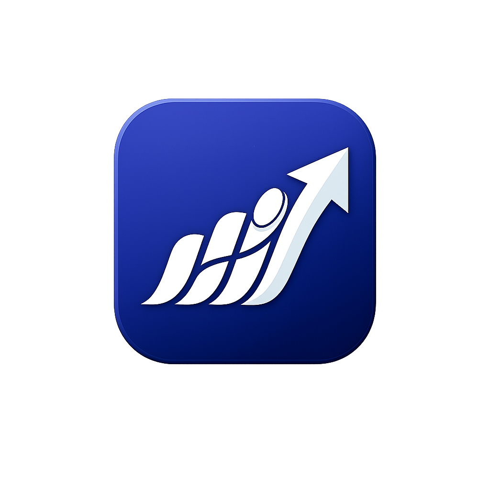

How do I restore Premium?
Open the app, go to More > Premium, and tap Restore Purchases.

This page is designed for App Store support links. Users can learn how to restore premium, understand their finance data, and find the right next step quickly.
Open the app, go to More > Premium, and tap Restore Purchases.
Make sure the app is on the latest TestFlight or App Store build and give App Store Connect time to finish processing subscription metadata.
Your app data is backed by Firebase so signed-in users can access their finance records more reliably.
Yes. New entries support date and time selection so you can log past activity accurately.
Try Restore Purchases, then reopen the app and sign in again with the correct account.
Open More > Custom Categories. This area is available for Premium users.
Use this page URL in App Store Connect as your support link.
Current support pageUse the privacy policy page as your public privacy URL for App Store Connect and customer trust.
Open privacy policyUse the dedicated delete account page for App Store account deletion requirements.
Open delete account pageIf you want a public technical channel, you can also point users to your repository.
Open GitHubFor direct customer support, users can contact the official Finance Tracker support email below.
nakhulkrishna253@gmail.com